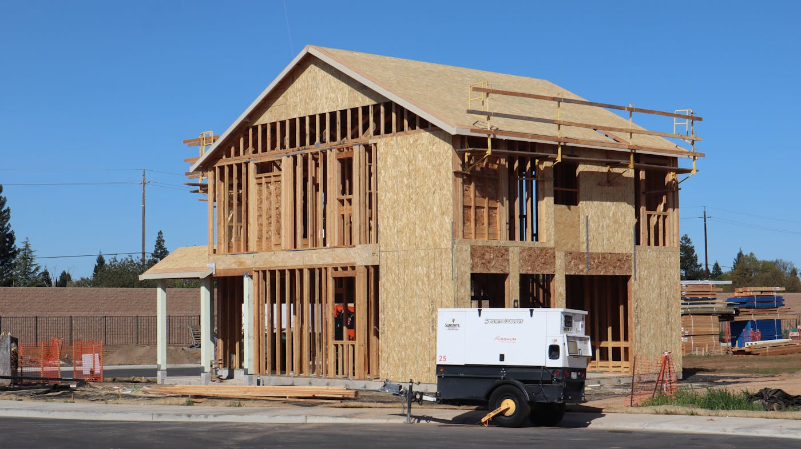

Quick answer: Energy efficient home builders in Sydney design and build to the NatHERS 7-star minimum required under the National Construction Code 2022 and NSW BASIX. A genuinely high-performance build — passive solar orientation, above-code insulation, double glazing, and whole-home electrification — typically adds $20,000–$60,000 to a standard Sydney build cost in 2026. Annual running cost savings of $1,500–$3,000 are realistic on a well-specified home. Not every builder who uses the phrase “energy efficient” is working above the code minimum.
“Energy efficient” in the residential building industry has become a bit like “natural” on a supermarket label — it means roughly whatever the person selling it wants it to mean. One builder’s “eco home” is another’s “compliant with the standard that has been mandatory for the past two years.”
[Right. Straight face now.] Here is what you actually need to know: what NSW requires, what distinguishes a builder who genuinely prioritises energy performance from one who meets the minimum and moves on, and what going above code costs on a Sydney build in 2026.
- What “energy efficient” actually means
- NSW BASIX and NCC 2022 — what’s mandatory
- The core features of a high-performance home
- The cost premium — real Sydney numbers
- All-electric homes and solar in 2026
- How to verify a builder’s energy credentials
- When not to prioritise energy efficiency
- Six questions to ask before you sign
- FAQ
What “Energy Efficient” Actually Means — and Why the Minimum Is a Low Bar
The term has no protected definition in the building industry. Any builder can use it on a website or in a brochure. What provides an objective measure is the Nationwide House Energy Rating Scheme (NatHERS), which rates residential buildings on a 0–10 star scale based on predicted annual heating and cooling energy load.
A higher NatHERS rating means the home requires less mechanical energy to maintain comfortable temperatures year-round. A 6-star home and a 9-star home can both be described as “energy efficient.” They are not comparable in any meaningful sense. The 9-star home might use less than a third of the energy for heating and cooling.
Since the National Construction Code (NCC) 2022 and the NSW BASIX amendments that followed in late 2023, all new homes in NSW must achieve a minimum NatHERS thermal rating of 7 stars. This replaced the previous 6-star standard. The uplift was meaningful — a 7-star home uses approximately 20–25% less energy for heating and cooling than a 6-star equivalent. But 7 stars is also the floor. Builders who reach the minimum and proceed to the next site are satisfying a legal obligation. Builders who consistently target 8–9 stars across different sites and orientations are doing something different.
Knowing which category you are in before signing a contract is worth finding out.
NSW BASIX and NCC 2022 — What’s Now Mandatory
BASIX — the Building Sustainability Index — is NSW’s state-level sustainability framework for residential development. It applies to all new homes, additions over $50,000, and alterations of significance. A BASIX certificate must accompany any DA or CDC application, and commits the applicant to specific targets for water efficiency, energy performance, and thermal comfort.
Under the current framework, a BASIX assessment generates target scores across three areas. The energy component requires achieving a NatHERS thermal rating and a Whole of Home energy budget score — a figure out of 100 that accounts for heating and cooling, hot water, appliances, lighting, and on-site generation such as solar. A home with a heat pump hot water system, solar PV, and a well-oriented design scores comfortably. A home with a gas hot water system, west-facing glazing, and no shading does not.
The NSW Planning Portal allows you to run a preliminary BASIX check before engaging a builder, providing a baseline sense of what your site and proposed design will need to achieve. Few homeowners take this step before their first conversation with a builder. Most leave it entirely to the builder or certifier, which is reasonable — provided you have confidence in the builder’s understanding of the framework and their record of performance above the minimum.
The Core Features of a High-Performance Home

Photo via Pexels
The difference between a code-minimum home and a high-performance one comes down to a defined set of design decisions made early in the process. Once the slab is poured, most of them cannot be changed cost-effectively.
Orientation and passive solar design. A home with main living areas facing north captures winter sun passively, reducing the heating load without mechanical assistance. Eaves sized to the latitude block high summer sun while allowing lower winter sun to enter. This approach costs nothing on a new site — it is a design decision, not a line item. Many volume builders use standardised plan orientations regardless of site aspect. This is where the divergence between a minimum-compliance build and a high-performance one begins.
Insulation. Ceiling, wall, and floor insulation specified above the code minimum reduces both heating and cooling demand and improves acoustic comfort. R-values above code add $3,000–$8,000 to a typical 200m² Sydney home depending on specification.
Glazing. Double-glazed windows with thermally broken frames reduce heat transfer through glass surfaces significantly. In Sydney’s climate, quality glazing primarily reduces summer heat gain through west-facing windows and reduces winter heat loss through large north-facing glass. The cost premium over standard single glazing runs $8,000–$25,000 on a typical Sydney home.
Thermal mass. Materials that absorb and store heat — concrete slabs, brick, rammed earth — moderate internal temperature swings. On a well-oriented Sydney site with adequate insulation, thermal mass can reduce peak cooling loads in summer and extend morning warmth into winter evenings without using a single watt.
Air sealing. Uncontrolled air infiltration accounts for a substantial portion of energy loss in residential buildings. Draught sealing at penetrations, ceiling planes, and door and window frames adds modest cost — $500–$2,000 on a typical home — but can improve the NatHERS rating by half a star or more. Most builders do not discuss it unless asked.
Shading and ventilation design. Deciduous plants on the north and west elevations, external blinds on west-facing windows, and cross-ventilation paths designed into the floor plan all reduce cooling loads at negligible cost relative to the mechanical alternatives they displace. These decisions belong in the design brief, not in a retrofit conversation five years after handover.
For more on how these decisions factor into a full custom build, our guide to building a new home in Sydney covers the broader process from brief to handover.
The Cost Premium — Real Sydney Numbers
The question most homeowners ask is: how much more does it actually cost?
The honest answer depends on which upgrades you choose and how far above the minimum you want to go.
| Upgrade | Typical cost (Sydney, 200m² home) | Estimated annual saving |
|---|---|---|
| Insulation above code (ceiling + walls) | $3,000–$8,000 | $200–$500 |
| Double glazing (thermally broken frames) | $8,000–$25,000 | $300–$800 |
| Heat pump hot water system | $3,500–$6,000 | $400–$900 |
| Solar PV (6.6 kW system) | $5,000–$9,000 installed | $1,500–$3,000 |
| Battery storage (10 kWh) | $10,000–$15,000 | $500–$1,500 |
| Air sealing and draught works | $500–$2,000 | $200–$400 |
Going from a 7-star code-minimum home to a genuinely high-performance build — 8–9 stars, heat pump hot water, solar PV, quality glazing, above-code insulation — typically adds $20,000–$60,000 to a Sydney build depending on size and which elements you prioritise. At current Sydney electricity prices, the payback period on building envelope upgrades alone runs 8–15 years. Solar shortens that considerably.
A builder who tells you the premium is zero is designing to the minimum and framing it as ambition. This is not a complaint. It is arithmetic.
All-Electric Homes and Solar in 2026

Photo via Pexels
The shift to all-electric homes has accelerated in Sydney. Gas connection costs have risen sharply, and natural gas rates have increased substantially relative to their pre-2022 levels. In 2026, a new all-electric home — heat pump hot water, induction cooking, reverse-cycle heating and cooling — paired with a modest solar array routinely achieves lower annual energy costs than an equivalent gas-connected home.
The practical implication for a new build: specify no gas connection. The saving on gas infrastructure — meter connection, supply pipes, gas appliances — partially offsets the cost of heat pump and induction alternatives. The running cost savings begin from day one and compound over the decades the home is occupied.
Rooftop solar on a new home is close to standard practice in 2026. A 6.6 kW system on a north-facing Sydney roof generates approximately 9,000–10,000 kWh annually and reduces grid consumption substantially for a typical household. Feed-in tariffs in NSW have declined over the past three years, so the value of solar in 2026 is primarily in self-consumption offset rather than export revenue.
Battery storage is a judgment call. If your household consumes most energy during daylight hours — because someone is home, you run a home office, or you work from home — the case for battery is weaker, since you will already consume most of what you generate. If your household is absent during the day and home in the evenings, a battery extends the value of your solar generation. The payback period at current NSW tariffs runs 8–14 years depending on usage patterns and battery specification.
How to Verify a Builder’s Energy Credentials
Claimed credentials are straightforward to produce in a brochure. Verifiable ones take slightly more effort on your part but take less than an hour.
NSW contractor licence. All residential builders in NSW must hold a current contractor licence issued by NSW Fair Trading. Check the licence number at the NSW Fair Trading licence register. An expired or suspended licence is a stopping point, not a conversation to continue. This applies to all builders, not only those claiming sustainability credentials.
GreenSmart Professional certification. Issued by the Housing Industry Association, this accreditation requires training in sustainable building practices and ongoing professional development. It is not a guarantee of quality but is evidence that the builder has invested in the field rather than simply adopted the marketing language.
Green Star accreditation. The Green Building Council of Australia’s Green Star scheme provides independent certification for sustainable buildings. Green Star homes are uncommon in the residential sector, but builders with experience delivering Green Star-rated projects have a demonstrated track record against an independent standard. TURYN’s approach to sustainable design is outlined on our about page.
NatHERS assessor involvement. Ask whether the builder engages a NatHERS assessor during the design phase or only at the compliance submission stage. A builder who uses energy modelling as a design tool — iterating orientation, insulation, and glazing choices to improve the rating before documentation is finalised — treats performance as a design outcome. A builder who engages the assessor only at the end to confirm compliance treats it as a paperwork exercise. Both produce valid BASIX certificates. The buildings they produce are not equivalent.
Past project ratings. Ask for the NatHERS ratings achieved on three recent comparable projects, and ask for the certificate numbers so you can verify them. A builder consistently achieving 8–9 stars across different sites and orientations has embedded energy performance into their process. A builder who consistently produces 7.0–7.2 is producing code-compliant homes and calling them energy efficient. See our portfolio for examples of how TURYN approaches this on completed projects.
For a broader guide to evaluating builders on all criteria, our post on how to choose a custom home builder covers the full due diligence process.
When Not to Prioritise Energy Efficiency
This section is the one most guides skip. We are not most guides.
Do not prioritise energy efficiency upgrades if doing so requires cutting the build budget in areas that affect structural quality, waterproofing, or site supervision. A well-oriented, well-insulated home built to a solid standard will outperform an over-specified home whose builder had to compress margins elsewhere. Energy performance is valuable. It is not more valuable than a watertight roof or a properly supervised slab.
Do not spend $15,000 on a battery system if the same money would improve your kitchen specification, your bathroom fitout, or your landscaping. The financial return on battery storage in NSW’s current feed-in tariff environment is modest and slow. The return on a well-built, comfortable home is immediate and lasts the life of the building.
Do not choose a builder primarily on sustainability marketing without verifying their licence, checking references, and reviewing comparable completed work. “Green” language in a brochure is not a substitute for demonstrated build quality and project management competence. The most energy-efficient home in Sydney is the one that is also built correctly the first time.
If you are building in a bushfire-prone area — parts of the Hills District, Northern Beaches, or the Lower Blue Mountains fringe — Bushfire Attack Level (BAL) requirements may constrain glazing and external cladding choices in ways that affect the energy rating. Your builder should know this before the design process begins, not discover it at the certifier stage. This is covered in more detail in our guides to custom home builders on the North Shore and custom home builders in Sydney’s western suburbs.
Six Questions to Ask an Energy Efficient Home Builder
Do this before any commitment, not after you have sat through three presentations and are already attached to the renders.
- What NatHERS ratings have your last five comparable projects achieved? Ask for the certificate numbers so you can verify them independently. A builder targeting genuine energy performance will have a consistent record above 7.5 stars across varied sites and orientations.
- Do you work with a NatHERS assessor during the design phase, or only at compliance submission? Early involvement means the energy model shapes the design. Late involvement means it confirms what has already been decided. These produce different buildings.
- Is your standard specification all-electric, or gas-connected? In 2026, a builder who still defaults to gas connections needs a specific reason. “Some clients prefer it” is not a reason. “The site is in an area without solar access and the brief requires certain appliances” is one.
- What insulation R-values do you specify, and how do they compare to the code minimum? This should be a factual answer given without prompting. Vagueness is informative.
- Are you a GreenSmart Professional or do you hold any Green Building Council accreditation? Not a requirement. How the question is answered — and whether it prompts a conversation about energy performance or a deflection — tells you something about how the builder thinks about the subject.
- Who holds the NSW contractor licence for this project? Verify the answer on the NSW Fair Trading register before signing. This is not distrust. It is due diligence on a contract worth hundreds of thousands of dollars. If you are ready to build, get in touch with the TURYN team to discuss your project.
Six questions. Not unreasonable for a decision that will shape your energy bills and living comfort for the next three decades.
FAQ
What is a NatHERS energy rating?
NatHERS — the Nationwide House Energy Rating Scheme — rates residential buildings on a 0–10 star scale based on predicted annual heating and cooling energy load. A higher rating means the home requires less mechanical energy to remain comfortable. Since NCC 2022, new homes in NSW must achieve a minimum 7-star thermal rating under BASIX.
What does the 7-star NatHERS requirement mean for new homes in NSW?
Since the NCC 2022 and NSW BASIX amendments in late 2023, all new homes in NSW must meet a minimum 7-star NatHERS thermal rating. This replaced the previous 6-star minimum. A 7-star home uses approximately 20–25% less energy for heating and cooling than a 6-star equivalent. Builders must also meet a Whole of Home energy budget that accounts for hot water systems, appliances, and on-site solar generation.
How much more does an energy-efficient home cost to build in Sydney?
Going from a 7-star code-minimum home to a genuinely high-performance build — 8–9 stars, heat pump hot water, solar PV, well-specified glazing and insulation — typically adds $20,000–$60,000 to a Sydney build cost in 2026. Individual upgrades such as double glazing ($8,000–$25,000), additional insulation ($3,000–$8,000), and a solar system ($5,000–$9,000) can be specified selectively based on site and budget.
What is BASIX and is it required for all new homes in NSW?
BASIX — the Building Sustainability Index — is the NSW government’s mandatory sustainability framework for residential development. A BASIX certificate is required for all new homes, additions over $50,000, and significant alterations. It sets targets for water efficiency, energy performance, and thermal comfort. The certificate must accompany your DA or CDC application.
What is passive solar design?
Passive solar design orients the main living areas of a home to face north, capturing winter sun for natural heating without mechanical systems. Eaves or shading devices sized for the latitude block high summer sun while allowing lower winter sun to enter. Combined with adequate thermal mass and insulation, passive solar design can reduce heating and cooling loads by 30–50% compared to a poorly oriented equivalent. It costs nothing on a new build — it is a design decision made during planning, not a materials cost.
What certifications should an energy-efficient home builder have?
In NSW, all residential builders must hold a current contractor licence issued by NSW Fair Trading. Beyond the mandatory licence, relevant credentials include GreenSmart Professional certification from the HIA, Green Star accreditation from the Green Building Council of Australia, and demonstrated experience working with accredited NatHERS assessors during design development rather than only at compliance submission.
Will an energy-efficient home save money on running costs?
A well-specified energy-efficient home in Sydney — good passive design, above-code insulation, double glazing, heat pump hot water, and a solar PV system — can reduce annual energy costs by $1,500–$3,000 compared to a code-minimum home. The exact saving depends on household size, occupancy patterns, appliance choices, and electricity tariff structure. An all-electric home with a modest solar array routinely achieves lower annual energy costs than an equivalent gas-connected home at current Sydney energy prices.
What is the difference between a 7-star and a 10-star home?
A 7-star NatHERS home meets the current NSW minimum standard and uses significantly less energy for heating and cooling than a 6-star home. A 10-star home requires near-zero mechanical heating or cooling to maintain comfortable temperatures, achieved through very high insulation levels, triple glazing or equivalent, meticulous air sealing, and optimised passive design. In Sydney’s mild climate, 8–9 stars is a practical and cost-effective target for most custom builds. Reaching 10 stars in Sydney requires investment that exceeds payback in most residential projects.
Do I need a NatHERS assessment to build in NSW?
Yes. A NatHERS energy assessment is required to satisfy the thermal comfort element of your BASIX certificate for new homes in NSW. The assessment is carried out by an accredited NatHERS assessor and generates a star rating report that must be submitted with your DA or CDC application. Your builder or architect typically coordinates this as part of the design and approvals process.